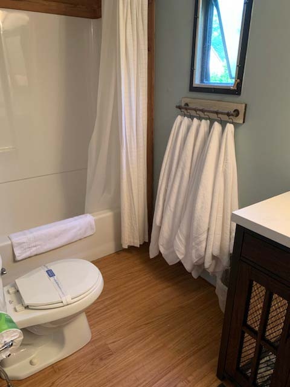

J&S Creekside Cabins is the family-owned cabin rental property that first-time Catskills visitors depend on when they want comfort without pretension. Located at 12 Wegman Rd in Livingston Manor, this property has earned a loyal following among travelers who appreciate clean, well-maintained cabins steps from the Willowemoc Creek. The team behind J&S Creekside Cabins brings years of hands-on hospitality and deep knowledge of the local fishing, hiking, and seasonal attractions that make Sullivan County a destination worth returning to. cabin rentals Catskills Whether you are a solo angler or a family of six, the property accommodates a range of group sizes and budgets. cabins Livingston Manor NY Visit J&S Creekside Cabins at 12 Wegman Rd, Livingston Manor, NY 12758 or call (607) 242-2960 today
What Should First-Time Guests Know Before Booking Cabin Rentals in the Catskills?
Booking your first cabin stay in the Catskills does not need to be complicated, but a few details make the difference between a good trip and a great one. Start by deciding how many guests will be joining you and what season best fits your plans. Peak fall foliage weekends and opening day of trout season in April tend to book quickly, so reserving early gives you the widest selection of cabins. cabin rentals near Roscoe NY Livingston Manor properties typically require a two-night minimum on weekends, which gives you enough time to settle in and explore the area without feeling rushed. learn about creek fishing from your cabin

How Do You Choose the Right Cabin Size for Your Group in Livingston Manor?
Matching your group to the right cabin matters more than most first-timers expect. J&S Creekside Cabins offers properties that range from cozy one-bedroom units suited for couples to larger multi-room cabins that sleep families and small groups comfortably. Consider whether you need a full kitchen, multiple bathrooms, or direct creek access when making your decision. Asking about specific cabin layouts before booking ensures everyone in your party has the space they need for a relaxing stay in Livingston Manor.
What Amenities Come Standard with Catskills Cabin Rentals?
Guests often wonder what to pack and what the cabin provides. Most cabin rentals in the Catskills include linens, basic cookware, heating, and hot water. At J&S Creekside Cabins, each unit comes equipped with essentials so you can arrive and start enjoying the mountains immediately. Fire pits, outdoor seating, and creek access are part of the experience rather than add-ons. Knowing what is included ahead of time helps first-time visitors pack appropriately and avoid unnecessary stops on the drive up from the city.
Where Can Guests Explore Near DeBruce and the Upper Willowemoc Valley?
The hamlet of DeBruce, tucked deeper into the Willowemoc valley northwest of Livingston Manor, offers some of the most secluded hiking and fishing access in Sullivan County. Trails leading into the Catskill State Park begin just minutes from cabin properties, and the upper Willowemoc Creek runs through stretches of catch-and-release water prized by experienced anglers. creekside cabins Catskills First-time visitors who want to go beyond the hamlet center will find DeBruce a rewarding side trip with scenery that defines the Catskill mountain character.

Is It Better to Book Cabin Rentals in the Catskills During the Week or Weekend?
Midweek stays offer a quieter experience and sometimes lower rates, which is worth considering for first-timers with flexible schedules. Weekends bring more activity to Livingston Manor, with local shops, the farmers market, and nearby Roscoe Village all busier during Saturday hours. Both options have merits depending on whether you want solitude or a taste of the local community atmosphere. Catskills cabin getaway J&S Creekside Cabins accommodates both midweek and weekend guests throughout the year, giving first-time visitors flexibility in planning.
What Makes Cabin Rentals in the Catskills a Better Fit Than Other Lodging Options?
Cabin stays deliver privacy, space, and a connection to the landscape that other types of accommodations simply cannot match. In Livingston Manor, waking up to the sound of the Willowemoc Creek outside your window is part of the daily rhythm that keeps guests coming back. You control your own schedule, cook your own meals, and step outside into the forest whenever you choose. fly fishing cabins NY For families, anglers, and anyone who values independence during a trip, cabin rentals in the Catskills provide a practical and memorable alternative. Ready to find the right cabin rental in the Catskills? Contact J&S Creekside Cabins at (607) 242-2960